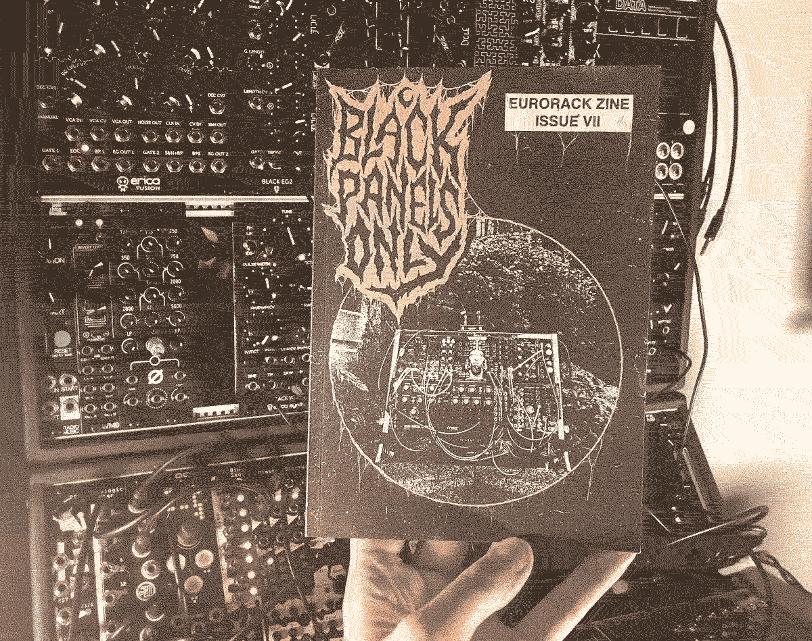
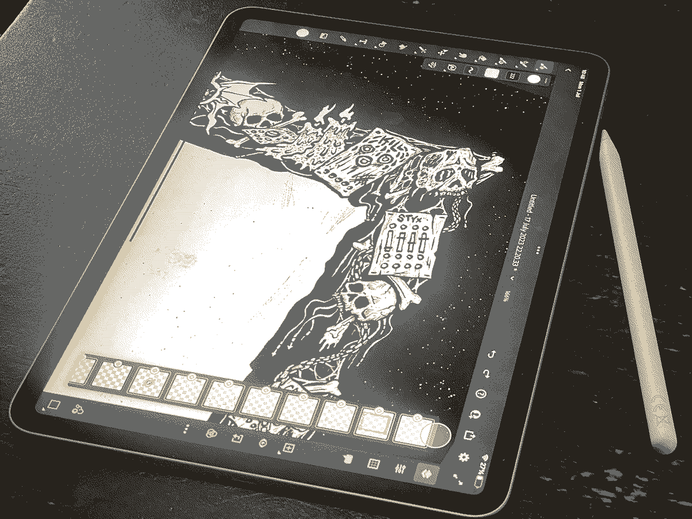
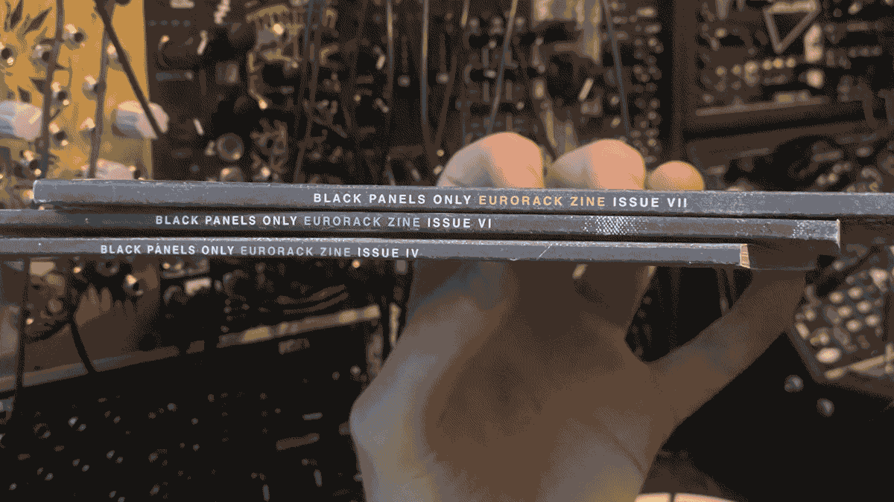

Issue VII

Papernoise- panel designers for loads of Euro companies such as: Mutable Instruments, Alright Devices, Hexinverter, had been on the hit-list from the beginning so it was great to finally get them in the zine. I knew they'd be a solid inclusion as there's already a ton of info online about their work and it's all mega interesting, like early iterations of the design process for a lot of the Mutable Instruments modules. See this modwiggler thread and also this one for some Mutable early versions and revisions. Hannes gave some great insights into their work with some things I'd never thought about such as using symmetrical panel designs to make things easier for left-handed people.
I was excited to include Modbap Modular and Omiindustriies who each have really creative lines of modules- not your typical oscillators and filters- and both gave great answers to my questions. A short but sweet chat with Iggor Cavalera was a super cool feature and you should check out his synth + vinyl sets.
I always like to spotlight some newer makers too which this issue came in the form of Sovage Engineering, Krypt Modular and Colossus Audio.
The cover features Sombre Lux's rack and for the design, I took inspiration from some death metal art such as the work of Necro Frost and Serus. It's always fun drawing little cobwebs. I enjoyed working on a border for the editorial page, again inspired by death metal art and the intricate borders in fanzines. This was done on an iPad, my first digitally drawn creation.

I bumped the page count up by an extra 25%, I figured now these are coming out way less frequently, this could help make it worth the wait and it's the first issue with a spine instead of staples - I think this looks really neat and it removes some of the quality control problems that come with staple-bound zines. I've decided to use spines for all reprints now too- the recent reprints of issues IV and VI now have fancy spines.

Released 1st September 2023.
Features:
- Papernoise
- Modbap Modular
- Iggor Cavalera
- Sovage Engineering
- Deborah Sheedy
- Omiindustiies
- Colossus Audio
- Kristof Bathory
- Meagan Jane Marron
- Krypt Modular
- My Rack - Yawning Youth
- The Coda - a short story by Blackie Dawless
- New Module Roundup